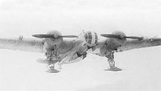
Туполев АНТ-46 Дальний истребитель
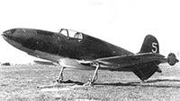
Березняк, Исаев БИ Истребитель-перехватчик
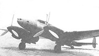
Петляков ВИ-100 Высотный истребитель
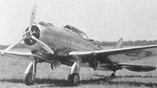
Seversky 2PA Истребитель
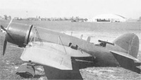
Bellanca 28-90 Истребитель-бомбардировщик
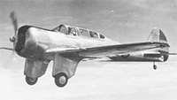
Curtiss-Wright CW-19 Истребитель-штурмовик
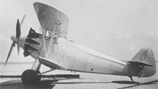
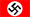
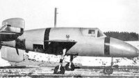
Bachem Ва.349 NATTER Одноместный истребитель-перехватчик
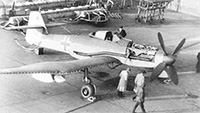
Blohm und Voss ВV.155 Высотный истребитель-перехватчик
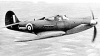
Bell P-400 AIRACIBRA Многоцелевой истребитель
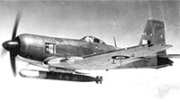
Blackburn FIREBRAND Палубный истребитель-торпедоносец
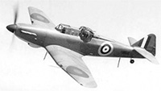
Boulton Paul DEFIANT Многоцелевой истребитель
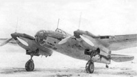
Архангельский АР-2 Бомбардировщик
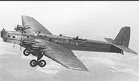
Туполев АНТ-6 Бомбардировщик
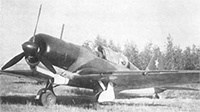
Сухой ББ-1 Ближний бомбардировщик
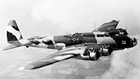
Boeing B-17А FLYING FORTRESS Тяжелый бомбардировщик
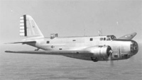
Douglas В-18 BOLO Средний бомбардировщик
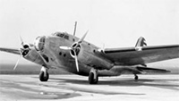
North American B-21 Средний бомбардировщик
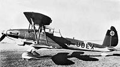
Arado Ar.81 Пикирующий бомбардировщик
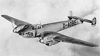
Messerschmitt Bf.162 Легкий бомбардировщик
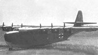
Blohm und Voss BV.250 Дальний бомбардировщик
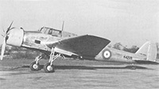
Armstrong Whitworth AW.29 Легкий бомбардировщик
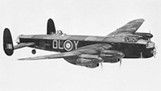
Avro LANCASTER Тяжелый бомбардировщик
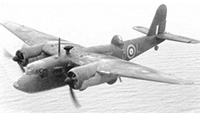
Blackburn B-26 BOTHA Бомбардировщик-разведчик
 Березняк, Исаев БИ Истребитель-перехватчик
Березняк, Исаев БИ Истребитель-перехватчик Seversky 2PA Истребитель
Seversky 2PA Истребитель Bell P-400 AIRACIBRA Многоцелевой истребитель
Bell P-400 AIRACIBRA Многоцелевой истребитель